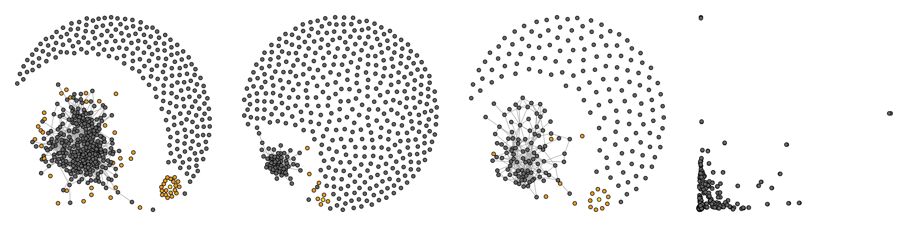

Fabric of Community
A continued investation into the fashion industry, Fabric of Community is a story about the many bright minds and kind hearts who have chosen fashion as a force for good. These individuals and collectives are helping build local economies. They are redefining the roll of business in society and are using fashion to convery the message of sustainability and social justice. In this study, I analyze the social network of fashion brands to reveal intersting connections.
-
In Progress
See all work
-
Data Stories
-
Five Minute Conversations
-
Interviews